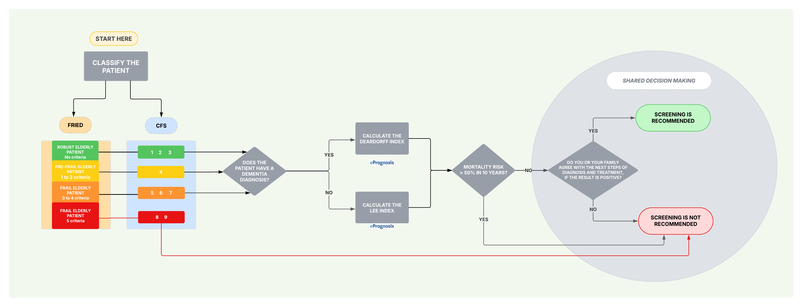

75+ Cancer Screener (75+CS)
SCREENING FOR BREAST, COLORECTAL AND PROSTATE CANCER IN 75+ YEARS OLD PATIENTS (MAY BE APPLIED FOR 65+)
Medicine Department, Discipline of Geriatrics and Gerontology
Paulista School of Medicine (EPM); Federal University of São Paulo (UNIFESP)
Authors: Marianne Wolff Rezende Teixeira, MD (UNIFESP); Matheus de Oliveira Barros, MD (UNIFESP); Gisele Wally Braga Colleoni, MD, PhD (UNIFESP)
Contributors: Maísa Braga Aguiar, MD (UNIFESP); Lia Alexandre Botelho de Paula, MD (UNIFESP); Luciano Pereira Soares, PhD (Insper); Adriana Bruscato Bortoluzzo, PhD (Insper); Ana Beatriz Galhardi Di Tommaso, MD, MSc (UNIFESP); Eduardo Canteiro Cruz, MD (UNIFESP); Maysa Seabra Cendoroglo, MD, PhD (UNIFESP)

Step of 5
CFS:
FRIED:
Dementia:
10-year mortality risk:
Consent:
Step 1 — Frailty
Fill the Clinical Frailty Scale (CFS) or Fried Criteria. Only one method is needed to proceed.
Selected: /5 —
Handgrip Strength — Cut-off points
Women: < 16 kgf
Men: < 27 kgf
Women: < 16 kgf
Men: < 27 kgf
*Handgrip strength was adapted from original Fried criteria and does not correlate with BMI.
Reference: Writing Group for the European Working Group on Sarcopenia in Older People 2 (EWGSOP2), and the Extended Group for EWGSOP2. Sarcopenia: revised European consensus on definition and diagnosis. Age Ageing. 2019;48(1):16-31. doi: 10.1093/ageing/afy169. Erratum in: Age Ageing. 2019;48(4):601. doi: 10.1093/ageing/afz046. PMID: 30312372; PMCID: PMC6322506.
CFS:
1 — Very Fit: robust, high energy.
2 — Well: no active disease, ocasionally active.
3 — Managing Well: medical problems are well controlled, regularly active.
4 — Vulnerable: not dependent, symptoms limit activities.
5 — Mildly Frail: more evident slowing, needs hel with IADL.
6 — Moderately Frail: needs help with all outside activities.
7 — Severely Frail: completely dependente for personal care.
8 — Very Severely Frail: approaching end of life.
9 — Terminally Ill: life expectancy < 6 months
1 — Very Fit: robust, high energy.
2 — Well: no active disease, ocasionally active.
3 — Managing Well: medical problems are well controlled, regularly active.
4 — Vulnerable: not dependent, symptoms limit activities.
5 — Mildly Frail: more evident slowing, needs hel with IADL.
6 — Moderately Frail: needs help with all outside activities.
7 — Severely Frail: completely dependente for personal care.
8 — Very Severely Frail: approaching end of life.
9 — Terminally Ill: life expectancy < 6 months
Step 2 — Does the patient have a dementia diagnosis?
Step 3 — Deardorff Index (dementia)
10-year mortality risk:
Step 3 — Lee Index (10 years)
Score Lee:
10-year mortality risk:
Step 4 — Shared decision-making
Question: If the result is positive, does the patient and/or their family agree to proceed with diagnostic evaluation and treatment?
Interventions (pharmacological and non-pharmacological therapies) can be implemented and change this decision.
Intervention examples:
Healthy Eating

Physical Activity
Cognitive Stimulation
CFS:
Dementia:
10-year mortality risk: Lee | Deardorff
Consent:
Advice:
Start over returns to Step 1 keeping data already entered;
Reset clears all data and restarts the calculator.